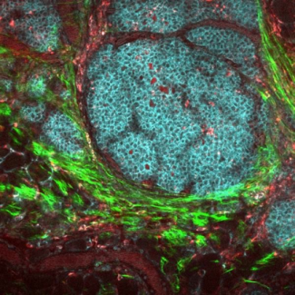
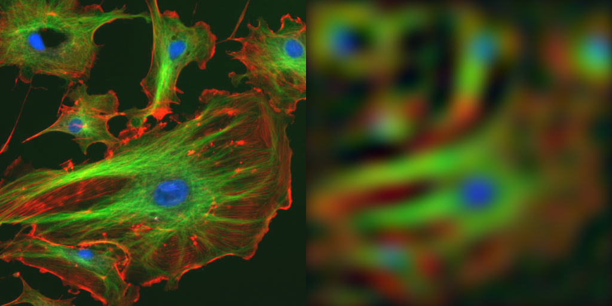
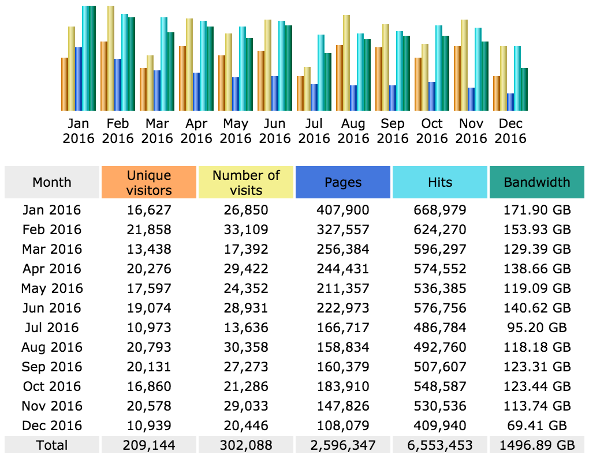

What's New in ImageJ2?
ImageJ in the 21st century
Curtis Rueden,
UW-Madison LOCI
Tweets to #NEUBIAS
https://imagej.github.io/presentations/2017-02-16-imagej2-neubias


Laboratory for Optical and Computational Instrumentation
LOCI develops advanced optical and computational techniques for imaging and experimentally manipulating living specimens.

Science

Software
What is ImageJ?
 Fiji?
Fiji?
 ImageJ2?
ImageJ2?
 ImageJ1?
ImageJ1?
 ImgLib2?
ImgLib2?
 SciJava?
SciJava?
 SCIFIO?
SCIFIO?
WAT
An application
A tool for image science
A reusable library

// Create a new ImageJ gateway with all available services.
ij = new ImageJ()
// Load a dataset from somewhere.
dataset = ij.io().open(imageSource)
// Filter the image.
fft = ij.op().fft(dataset)
lowpass(fft, 10)
result = ij.op().ifft(fft)
// Display the result.
ij.ui().show(result)
An extensible collection
of services & plugins


A shared framework for
image processing
"Write once, run anywhere" image processing
Yes, ImageJ is all of that!
But most importantly...
ImageJ is a community!
Schindelin, J., et al. "The ImageJ ecosystem: an open platform for biomedical image analysis." Molecular reproduction and development 82.7-8 (2015): 518-529.
A sizable community...
Motivation
Why use ImageJ? Why improve ImageJ?
Why not use Imaris and MATLAB for everything?
Why join this community?
- Frugal: ImageJ is free and cross-platform
- Pragmatic: You can fix bugs, add features
- Scientific: See and understand how it works
- Ethical: Fully reproducible, better science
Better science?
Why do science in the first place?
- Stand on each other's shoulders
 Discover new knowledge
Discover new knowledge- Improve the human condition
21st century science requirements
- Quantitative research
 Keep track of everything
Keep track of everything
Information provenance
- Remember what you did, and how
- Explain it to someone else
Reproducibility
- Validate others' work
Is this good data?
Sharing information
The Internet makes sharing easy
- Wikipedia: public encyclopedia
- Stack Exchange: public Q & A
- GitHub: public source control
- Twitter: public social interaction
- Google: public etc.
"When in doubt, make it public."
—Jeff Atwood (co-creator of Stack Overflow)
Beyond open results
Publish a compendium, not just a result
- Protocols & methodology
- Raw data
- Computer code
"An article about computational science in a scientific publication is not the scholarship itself, it is merely advertising of the scholarship."
—David Donoho, "Wavelab and Reproducible Research," 1995
Science Code Manifesto
Deep reproducibility demands the source code
"Software is a cornerstone of science. Without software, twenty-first century science would be impossible. Without better software, science cannot progress."
—Science Code Manifesto
And it is good for your career:
"Papers describing software published as open source are amongst the most widely cited publications (e.g., BLAST, and Clustal-W), suggesting many scientific studies may not have been possible without some kind of open software to collect observations, analyze data, or present results."
—Andreas Prlić & James Procter
"Ten Simple Rules for the Open Development of Scientific Software"
And it is good for your career:
"Science is hard enough already."
—Andreas Prlić & James Procter
"Ten Simple Rules for the Open Development of Scientific Software"
And it is good for your career:
Seriously.
Open software is a process
- Ongoing open development
- Improve software as a community
- Open access resources
- Responsive, reliable maintainers
- Powerful collaboration tools (GitHub!)
^ Look familiar? ;-)
ImageJ Software Stack
Modular and extensible components

ImageJ2

SciJava
(base)

ImgLib2
(data model)

SCIFIO
(image I/O)

Ops
(image processing)

ImageJ Legacy
(compatibility)
SciJava Pledge
A pledge to cooperate and reuse code
SciJava Component Collection
A collection of software components curated together
A promise of compatibility
Fiji Is Just ImageJ

- A distribution of ImageJ for the life sciences
- A community of ImageJ developers
- Built on the ImageJ2 platform
- Includes over 700 additional commands


What's New in ImageJ2?
| Image types | uint8, uint16, float32, rgb | bit, uint2, uint4, uint8, uint12, uint16, uint32, uint64, uint128, int8, int16, int32, int64, float32, float64, cfloat32, cfloat64, bigint, bigdec, argb, <your-image-type-here> |
| Plugin types | PlugIn, PlugInFilter, PlugInTool | Command, Op, Tool, IOPlugin, Service, Converter, Codec, Format, DataHandle, TextFormat, ScriptLanguage, Display, UserInterface, Platform, App, Gateway, ModulePreprocessor, ModulePostprocessor, CodeRunner, ..., <your-plugin-type-here> |
| Dimensions | 5D—XYZCT | N-dimensional—X, Y, Z, time, channel, emission spectra, lifetime, cell polarity, <your-dimension-here> |
| Image formats | HandleExtraFileTypes | SCIFIO—including Bio-Formats plugin; <your-format-here> |
| Parameters | GenericDialog | SciJava module @ parameter syntax—callable from ImageJ, KNIME, OMERO, CellProfiler, ..., <your-tool-here> |
| Script languages | IJ1 macro, JavaScript, BeanShell, Java | BeanShell, Clojure (Lisp), Groovy, Java, JavaScript, JRuby, Jython (Python), Renjin (R), Scala, <your-language-here> |
| User interface | AWT | Legacy, Swing, AWT, Apache Pivot, Eclipse SWT, JavaFX, KNIME, CellProfiler, OMERO, <your-ui-here> |
| Distribution | Download, install and update manually | Hundreds of update sites; receive updates automatically (when you want!) |
What's Newer??
Future directions
"Of course there is plans..."
—Florian Jug
The rise of polyglot tools
More will emerge. Always keep looking!
How to get involved
- Edit and improve the ImageJ wiki.
- Adopt a plugin. Or ten!
- Make your science open and reproducible.
- Code your favorite/new algorithms with ImgLib2.
- Discuss ideas publicly to help all of us.
Help others to avoid repeating your pain.
You are custodians of the OSS ecosystem!
PIs: write grants to fund ImageJ-based development!
Further reading about ImageJ
Academic paper
Rueden, C. T., et al. "ImageJ2: ImageJ for the next generation of scientific image data." arXiv preprint (2017).
45-minute presentation
Rueden, C. T. "ImageJ2 and Fiji: The ImageJ2 platform, and the Fiji distribution of ImageJ." ImageJ Conference 2015. video, slides
Thanks!
Kevin
Eliceiri
Pavel
Tomancak

Jason
Swedlow
Michael
Berthold
Anne
Carpenter
Christian
Dietz
Tobias
Pietzsch
Stephan
Saalfeld
Wayne
Rasband
And all supporters of open science and open software!